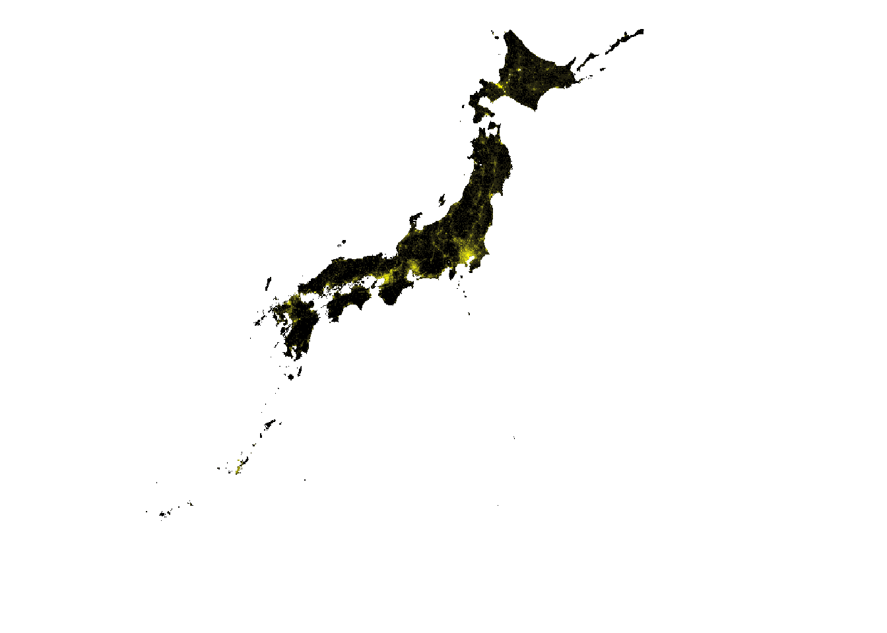
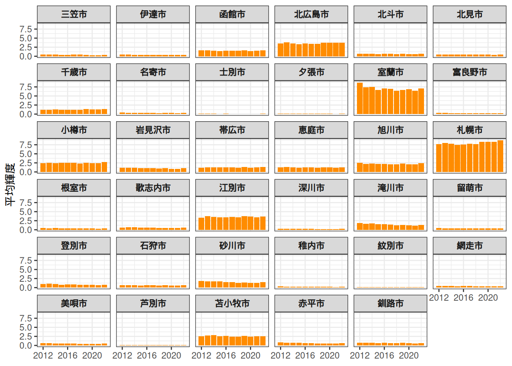

library(blackmarbler)
library(sf)
library(terra)
library(ggplot2)
library(tidyterra)
library(here)はじめに
ご無沙汰の更新となります。今回は、Rを使ってBlack Marbleの夜間光データを取得・分析する方法を紹介します。
GIS in RにてVIIRSの夜間光データを取得する方法を紹介していますが、今回はBlack Marbleを扱います。
夜間光を可視化する
yo5uke.com
日本の夜間光データ（2012～2024）
2012～2024年のVIIRS夜間光データから日本領域を抽出・処理したデータセット。
yo5uke.com
VIIRSデータとBlack Marbleの違い
夜間光データといえば、NASAとNOAAが運用するSuomi NPP衛星・NOAA-20衛星・NOAA-21衛星に搭載されたVIIRS（Visible Infrared Imaging Radiometer Suite）センサーで取得されたデータが広く使われています。
本サイトで扱っていた夜間光データは、Earth Observation Group（EOG）が提供するAnnual VNL V2という年次データでしたが、NASA EarthdataのLAADS DAACではBlack Marble（VNP46）というシリーズも提供されています。
これまで扱っていたものと、今回扱うBlack Marbleの違いを簡単にまとめると以下のようになります。
| EOG/VNL（Annual VNL V2） | Black Marble（VNP46） | |
|---|---|---|
| 提供元 | Colorado School of Mines（Earth Observation Group） | NASA Earthdata（LAADS DAAC） |
| センサー | VIIRS（Suomi NPP・NOAA-20） | VIIRS（Suomi NPP・NOAA-20・NOAA-21） |
| 時間分解能 | 年次 | 日次・月次・年次 |
| 空間分解能 | 約500m（15 arc-second） | 約500m（15 arc-second） |
| 主な補正処理 | 雲マスク・月光ピクセル除外・ストレイライト除去・外れ値除去（火災等） | 大気補正・月光BRDF補正・雲マスク・積雪補正・地形補正・植生補正・ストレイライト除去 |
| アカウント | EOGアカウントが必要 | NASA Earthdataアカウントが必要 |
Black Marbleの製品ラインナップ
Black MarbleはVNP46シリーズとして提供されており、時間解像度によって以下の製品があります。
| 製品ID | 内容 | 時間解像度 |
|---|---|---|
| VNP46A1 | 日次データ（未補正・大気上端の生輝度値） | 日次 |
| VNP46A2 | 日次データ（月光BRDF補正・大気補正・雲マスク・ギャップフィル済み） | 日次 |
| VNP46A3 | 月次合成データ | 月次 |
| VNP46A4 | 年次合成データ | 年次 |
VNP46A2は月光・大気・積雪の影響を補正したうえで、雲による欠損ピクセルをギャップフィルしたプロダクトです。日次データを使いたい場合は補正済みのこちらが適していると思います。VNP46A1は補正前の生輝度値（TOA radiance）で、補正処理を自分でカスタマイズしたい場合に使います。日次データを使いたい場合はこちらが扱いやすいのではないでしょうか。年次・月次でよければVNP46A4・VNP46A3を使います。
事前準備：NASA Earthdataアカウントとトークンの取得
Black Marbleのデータ取得にはNASA Earthdataのアカウントが必要です。
アカウント登録
- NASA Earthdataのサイトにアクセスし、アカウントを作成します。
Bearerトークンの取得
RからAPIでデータを取得するために、Bearerトークンが必要です。
- Earthdataにログインします。
- 右上のユーザー名をクリックし、「Generate Token」を選択します。
- 「Generate Token」ボタンをクリックするとトークンが表示されます。
- このトークンをコピーしてRのコード内で使います。
Warningトークンの扱いについて
個人で使う分には問題ないかもしれませんが、Bearerトークンはパスワードと同様の機密情報です。コードに直接書いてGitHubなどに公開しないようにしてください。コードに直接書くのではなく.Renvironファイルに環境変数として保存し、Sys.getenv()で読み込む方法が安全です（後述）。
パッケージのインストールと準備
今回は世界銀行が開発したblackmarblerパッケージを使います。
# pakを使う場合
pak::pak("blackmarbler")
# もしくは
install.packages("blackmarbler")また、地理データの処理にsfとterra、可視化にggplot2とtidyterraも使います。
pak::pak(c("sf", "terra", "ggplot2", "tidyterra", "here"))トークンの安全な管理
.Renvironファイルにトークンを保存しておくと、コードをそのまま共有してもトークンが漏れません。
プロジェクトのルートディレクトリに.Renvironファイルを作成し、以下の1行を追加して保存してRを再起動します。
.Renviron
NASA_BEARER=ここにコピーしたトークンを貼り付ける以降は以下でトークンを読み込めます。
bearer <- Sys.getenv("NASA_BEARER")データの取得
対象地域の準備
まず、データを取得したい地域の地理情報を用意します。ここでは日本全国の市区町村データを使います。
私が全国のデータを結合したものは、以下のリンクからダウンロードできます。
また、座標系をWGS84（EPSG:4326）に変換しておきます1。
muni <- read_sf(here("data/jpn_geojson/municipality_summarise.gpkg")) |>
st_transform(4326) # WGS84に変換bm_raster()でラスタデータを取得
blackmarblerパッケージのbm_raster()関数でデータを取得します。主な引数は以下の通りです。
| 引数 | 説明 |
|---|---|
roi_sf |
対象地域のsfオブジェクト |
product_id |
製品ID（"VNP46A4"など） |
date_range |
取得期間（c("開始日", "終了日")） |
bearer |
NASA Bearerトークン |
年次データ（VNP46A4）で2020〜2023年の日本を取得する例です。
ntl <- bm_raster(
roi_sf = muni,
product_id = "VNP46A4",
date = 2020:2023,
bearer = bearer
)単年でdate = 2023のようにすることもできます。
Note取得されるデータについて
bm_raster()は対象地域（roi_sf）を覆うNASAのタイルを自動的に判定し、ダウンロード・モザイク合成・クリップまで行ってくれます。1年ぶんのデータが1レイヤーとして格納され、複数年を指定した場合は多レイヤーのSpatRasterオブジェクトが返されます。
月次データ（VNP46A3）の場合はproduct_id = "VNP46A3"とし、dateに月初日を指定します。
ntl_monthly <- bm_raster(
roi_sf = muni,
product_id = "VNP46A3",
date = c("2023-01-01", "2023-12-01"), # 日は無視されます
bearer = bearer
)地域別の集計：bm_extract()
ポリゴン単位（今回でいえば市区町村単位）で夜間光の平均値などを集計したい場合は、bm_extract()が使えます。
# ポリゴンデータから北海道の市を抽出
hokkaido <- muni |>
dplyr::filter(id_pref == "01", stringr::str_ends(name_muni, "市"))
ntl_df <- bm_extract(
roi_sf = hokkaido,
product_id = "VNP46A4",
date = 2012:2022,
bearer = bearer
)| name_muni | id_muni | id_pref | n_pixels | n_non_na_pixels | prop_non_na_pixels | ntl_mean | date | geom |
|---|---|---|---|---|---|---|---|---|
| 札幌市 | 01100 | 01 | 7418 | 7418 | 1 | 7.6723404 | 2012 | MULTIPOLYGON (((141.2828 43... |
| 函館市 | 01202 | 01 | 4481 | 4481 | 1 | 1.6120635 | 2012 | MULTIPOLYGON (((141.1571 41... |
| 小樽市 | 01203 | 01 | 1787 | 1787 | 1 | 2.4043283 | 2012 | MULTIPOLYGON (((140.8554 43... |
| 旭川市 | 01204 | 01 | 5240 | 5240 | 1 | 2.5062435 | 2012 | MULTIPOLYGON (((142.2877 43... |
| 室蘭市 | 01205 | 01 | 640 | 640 | 1 | 8.6423740 | 2012 | MULTIPOLYGON (((140.941 42.... |
| 釧路市 | 01206 | 01 | 9268 | 9268 | 1 | 0.6960174 | 2012 | MULTIPOLYGON (((144.3589 42... |
返り値はsfオブジェクトで、各ポリゴンに年ごとの統計量（平均・合計など）が列として付与されます。これはそのまま夜間光の指標にできますし、他の属性データと結合して分析することもできます。
データの可視化
単年のプロット
取得したラスタデータはterraパッケージでそのまま扱えます。bm_raster()で得たデータをそのままプロットすると日本周辺の範囲も含まれるので、terra::mask()で範囲を限定し、さらに対数スケールを使うと光量の分布が見やすくなります。
# 2023年1月1日のデータを使用
r <- bm_raster(
roi_sf = muni,
product_id = "VNP46A3",
date = "2023-01-01",
bearer = bearer
)
# 範囲を日本に限定
r <- r |> terra::mask(muni)
# 分布が歪んでいるので対数変換
r[] <- log(r[] + 1) # 0を避けるために1を加算
ggplot() +
geom_spatraster(data = r) +
scale_fill_gradient2(
low = "black",
mid = "yellow",
high = "red",
midpoint = 4.5,
na.value = "transparent",
) +
coord_sf() +
theme_void() +
theme(
legend.position = "none"
)
やはり3大都市圏などでは夜間光が強い傾向が見て取れます。
複数年の変化を比較する
先ほどbm_extract()で得た市区町村ごとの年次平均値を使えば、年ごとの変化を比較できます。
ntl_df |>
ggplot() +
geom_col(aes(x = date, y = ntl_mean), fill = "darkorange") +
facet_wrap(~name_muni) +
labs(
x = NULL,
y = "平均輝度",
) +
scale_x_continuous(
labels = seq(2012, 2022, by = 4),
breaks = seq(2012, 2022, by = 4)
) +
theme_bw() +
theme(
strip.text = element_text(face = "bold")
)
特に大した理由もなく北海道の市を抽出してプロットしてみたのですが、札幌はともかく、それに匹敵するレベルで室蘭市の夜間光が強いのが意外ですね…。
簡単に調べた感じでは室蘭市は工業都市で、夜景が魅力なんだとか。単純に並べて見るだけでも面白いですね。
おわりに
今回はBlack Marbleの夜間光データをRで取得する方法についてまとめました。夜間光というのは文明を感じれて結構好きです。笑
行政区域データを使って、目的に合わせて必要なデータを取得してみてください！
参考
Black Marble Data and Statistics
Geographically referenced data and statistics of nighttime lights from NASA Black Marble <https://blackmarble.gsfc.nasa.gov/>.
worldbank.github.io